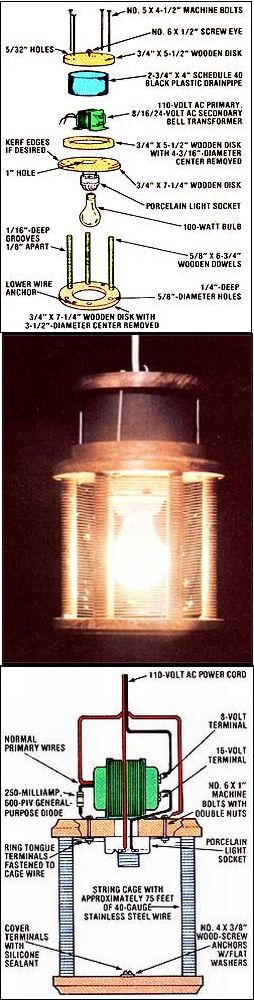

Don't swat: Put uninvited visitors on the hot seat, with . . .
Summer is the time of year when many folks spend their evenings outdoors, relaxing and entertaining . . . and, unfortunately, it's also the season for insects. The six-legged "unwanted guests" can be a real nuisance, too, and many devices (citronella candles, toxic pesticide strips, and bug bombs . . . to name only a few) have been used to wage war on airborne arthropods.
Probably the most effective and ecologically sound "weapon" to date is an electronic insect killer.However, we recently priced these elegant exterminators and found, to our dismay, that most of them will set the budget back anywhere from $100 to $220 . . . so we came up with an elementary build-it-yourself design that'll allow the average handyperson to enjoy many an "unbugged" midsummer's eve, for a cost of about $10 and an hour or two of shop time.
You can start the project by gathering the materials listed in the illustration . .. along with a piece of scrap 1 X 8 lumber about 26" long, a coping saw, a drill with an assortment of bits (including one 5/8" and one 1" in diameter), a compass, some wood glue, a soldering iron, a screwdriver, and an adjustable wrench.
Scribe two 7-1/4"- and two 5-1/2"-diameter circles on your plank (using the space as efficiently as you can). Next, outline a 3-1/2" circle, centered, inside one of the larger rings and a 4-3/16" loop in the middle of one of the smaller ones. Cut out the four disks with your coping saw, then go on to remove the centers of the two marked wheels after drilling small pilot holes to start your inside cuts. (If you have a router handy, you can also add a decorative kerf to one edge of each of the larger disks, as we've done.)
Now, take the dowel sections and carefully pencil transverse marks-1/8" apart-along each one's length, then cut 1/16"-deep slits on these lines, leaving 1/4" or so at the ends of each rod unscathed. This rather tedious operation can be made relatively simple if you have access to a band saw and can set up stops behind the blade that will allow you to make the channels rapidly.
Once the dowels have been grooved, drill six evenly spaced, 1/4"-deep, 5/8" holes in the face of the "gutted" 7-1/4" disk . . . placing them about 3/4" on center from its outer edge. Repeat this procedure on the like-sized uncut blank . . . boring from the side opposite the kerfed surface, if you've included one. Drill a 1 "opening through the center of the latter circular plate, and fasten your bell transformer and light socket to it as shown in the illustration, using the mounting holes provided in these pieces of hardware as drilling guides.
You're now ready to assemble the cage and wire it. Glue the slotted dowels into their respective receptacles in the upper and lower large disks, and-after allowing ample time for the adhesive to dry-coat the framework and the other two wooden components with shellac or polyurethane. Now mount the two transformer leads to ,two double-nutted machine-screw termi nal posts (which you should place at points 180° apart, on either side of the light fixture), and snug down the primary nuts to hold the "poles" in place. You can also, at this time, solder the rectifying diode in line . . . as shown in our wiring diagram.
Next, fasten a ring tongue terminal securely to the end of your stainless steel wire, and begin to loop the strand by first fastening it to one of the terminal posts with a secondary nut, then winding it counterclockwise. Once you've gone past the contact post opposite the one where you started, drop the wire down to the second tier of slots, then skip alternate levels of notches as you go. When you reach the lower end of the cage, cut the wire and fasten it between a pair of washers held tight by a wood-screw anchor placed near the edge of the base and on the same side as your starting point. Finish the job by winding a second wire-again, counterclockwise-between the remaining terminal at the top and a second screw mount in the base, using the "unstrung" slots in the dowels. (Of course, since these two sets of wire will be oppositely charged, they shouldn't touch each other at any point in their circuit.)
To complete your bug-buster, merely center the lid-mounting collar on the upper disk, drill four evenly spaced 5/32" holes through the wooden ring and the platform beneath, then-using the collar bores as guides-make four equivalent holes in the perimeter of the lid itself (the solid 5-1/2" disk) . . . as well as a single larger bore, offset from the center, to accommodate the power cord. Cut your 4" drainpipe to a length of 2-3/4" (or whatever's needed to cover the transformer you're using), and sand its outer surface to remove any lettering. Finish wiring the input line through the light socket and to the transformer as shown in our diagram, coat the terminals with silicone sealant, then mount the protective lid to the top of the wooden framework (with the plastic sleeve between), using No. 5 X 4-1/2" machine bolts. Wrap it up by inserting a 100-watt light bulb in the socket and fastening a screw eye to the middle of the lid to serve as a mount.
Finally, hang your handiwork under the soffit of your house, or from a pole on the patio (position it high enough so that curious children won't be able to touch it), and plug it in.(Its 182-volt-DC, 1/10-amp jolt will zap bugs and-though it wouldn't be classified as a particularly dangerous current-should be treated with respect. For safety's sake, you could easily tack a band of vinyl-covered metal, or plastic, 1/2"-grid screening or gutter guard to the edges of the large wooden disks . . . and be absolutely certain to refrain from using the apparatus in damp weather, or handling it-at any time-with the power on.Also, the device is most effective if you unplug it occasionally and brush any expired insects from its wire grid.)
Admittedly, our homebuilt exterminator isn't quite as effective as the more costly commercial units, but it does a darn good job for the price . . . allowing you to spend almost insect-free evenings outdoors.
|
 |
|
|